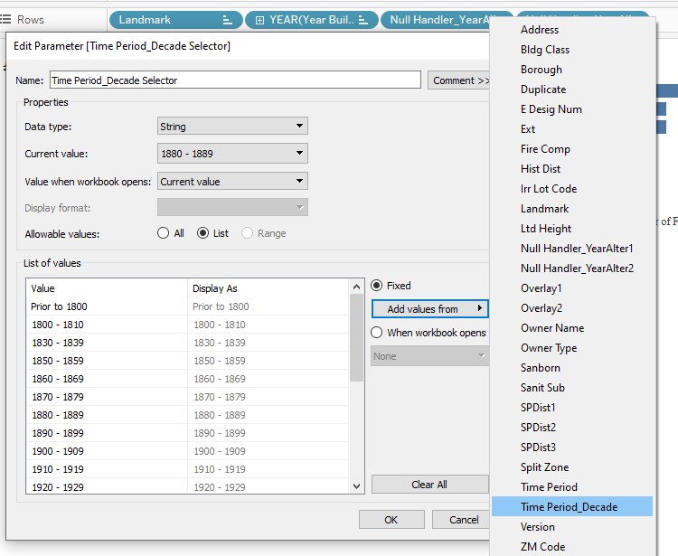

The thing I seemed to notice about the MakeoverMonday data visualization learning exercises is that they seem to deal with fairly clean data and supporting articles right there for context. Also, everyone else is working on them too, so if you’re stumped, you can just hop on Twitter and learn how others are fairing in the challenge. It’s almost like everything just kind of works out, and you’re on a nice Sunday drive on a winding road. Maybe a couple hiccups here and there if you’re ambitious, but that’s about it. Oh how nice.
This week I tried something different before getting to the usual weekly exercise, and wow, that is not a walk in the park at all. I decided to pursue a personal project.
I thought it would be neat to see how buildings came about over time, and what better place to see something like that than New York. I’ve personally been to NYC myself a couple times and there are so many buildings!
I decided to structure this post a bit differently with “lessons” learned. That way, you’ll see what kind of challenges can exist in data. No white picket fence step-by-step tutorial is going to prepare you for every situation. It’s important to keep trying and applying tools from the tool box.
So what I am about to show you here is something I’m really happy about accomplishing after a ton of troubleshooting!
Lesson #1: Dealing with dates is just the worst sometimes
I think just about everyone in the corporate world has had the experience of formatting dates in Excel. Sometimes you format the data by just the year, or maybe the month and day. Maybe you need time stamps or adjust for time zones too. And sometimes, you even need to format data to not be displayed as a date. Ever had a fraction get formatted to Jan-2?
Within Tableau, these kinds of nuances do indeed exist. I found a great blog post on how to handle them within Tableau, so they are displayed properly.
However, I also found a challenge in dealing with calculated fields.
Usually, when I illustrate calculated fields in my blog posts, it’s just as simple as IF [field] = “9” THEN yes … meaning, if the number 9 shows up in a certain field, then tell me yes!
Well, with dates, the syntax is a bit more complex.
The data set I had included the year that the building was built. It also included a possible two points in time after that where the building might have been altered. I thought that was interesting information. However, not every building was altered multiple times. “Null” values showed up in a lot of places, and I didn’t like that. Filtering out “null” values made things worse because then it excluded the entire row of data.
Instead, I wanted to have it display “N/A” instead of “null.” Applying the whole “if this then that” idea wasn’t as straightforward here. Simply putting in IF [YearAfter1] = “Null” then N/A just caused errors because the [YearAfter1] field is formatted as a date. “Null” isn’t a date. If you try to make a conditional statement with two different types of data, you’re gonna have a bad time.
The calculated field here shows that the field [YearAfter1] is being formatted to be displayed by a year (date part). Then, once it’s converted to a year, turn that into a string briefly (str). Now, if the string “null” exists in the [YearAfter1] field, it will then be replaced with the string “N/A.”
This is definitely an area that I need to keep exploring, but at least I got this one to work! There is something so satisfying about seeing “The calculation is valid” after 50,320,409 times that it said it contained errors in red text.

Lesson #2: Using fancy background maps sometimes feels like hanging a picture frame without a level
Tableau does come with decent default world maps if you have geographical data like zip codes, etc. It tends to generate longitude and latitude fields to help plot where the points go. Custom maps are also an option.
Usually, many tutorials talk about locating the area on the custom map, downloading an image of it, and then mapping it in Tableau via X and Y coordinates.
I found this to be a challenge because whatever X and Y coordinates that came with the data set I had looked differently. They weren’t really the same format as any latitude and longitude numbersI saw on the map I exported. I honestly have no clue why. It wasn’t as simple as just typing in the X and Y that matched with the latitude and longitude numbers I found with the map. If I did that, then the picture of the map would have been crazy small.

To make it extra challenging, apparently the map background that came in at scale wasn’t aligning to my data. The data looked skewed when it started plotting points. What I ended up doing was trying to square up the X and Y axes.

After that, I specified the default Background Maps to “none.” This would allow the custom map image to show up instead. I called it a night after that.

Lesson #3: Duplicates and weird stuff can happen in data
In the data set I was working with, I saw some odd things.
A building that was apparently built in the future (2040)
Multiple accounts of Rockefeller Center being built in different years
The Park Row Building stated 29 floors, but other sources noted storeys and floors in varying ways
Cut off names in landmark names, etc.
There are times where you can exclude items like these or you can note that there is a gap. What is important is that you don’t skew what is going on if you pick either of those options.
In my case, I decided to hide the 2040 building because it didn’t seem to detract from or skew the message of “growth over time.”
For the Rockefeller Center duplicates, I decided to research a bit further with other sources to narrow down duplicates. From there, I created a set in Tableau called “Keeper.” I then added all the unique landmarks to it. Simply excluding the duplicates outright seemed to hide all of the Rockefeller entries, so creating a set seemed to work better.
For the other items I saw, I mainly just let it go. In the case of floors vs storeys, there seems to be a debate on this. My whole point in illustrating it altogether was showing some distinct differences between most buildings and the first skyscrapers.
Lesson #4: Different fonts in Tableau can be tricky, but there is a workaround
Early on in my “data viz adventures” I would create my nice little data visualization, pick out fonts, colors, etc. As soon as I hit publish in Tableau Public, I would see that all my fonts would change to something else that was perhaps more “web” friendly. This also would screw up the layout.
What I’ve learned over time is to create dashboards that are “fixed” in size. I also learned to have images representing fonts that are different from the norm. That’s just what I personally do; I’m sure there are lots of methods.
What that means is that I’m adding a .png image of the text I want instead. This keeps the “style” I want intact.
To do this, I found afont generator online. I can just type what I want, pick out a font, and then download the .png image with a transparent background.

From there I can add my “title image” via the tools in the bottom left of the dashboard.
I decided to make my data viz look like a New York Times newspaper. For added flair, I added borders to the text boxes and “blanks.”

Lesson #5: Creating groups can help manage the chaos
I thought it would be neat to display the landmarks built in time periods. The viewer could then pick what they wanted to see. The problem was that parameters only allowed for single selections. I needed a “one to many” type situation on the fly.
What I did in this case was a create group.
To create this group, I right clicked on the [Year Built] field and specified create group. From there, I grouped the dates together manually.


After I grouped together the different time periods, I created a parameter that would then list all these time periods. These time periods would then be my “options” for the viewer to choose on the fly.


To make that “parameter selector” actually filter the data based upon user selection, I quickly created a calculated field.

I then placed the Time Period_Decade Show calculated field on the filters card. I also displayed the Time Period_Decade Selector parameter on the dashboard itself. These two working together would then display the correct landmarks per the time period, much like my previous tutorial posts.
The Final Viz and the Takeaway
Here is what I came up with after working on this data visualization on and off for about four days.

I find it so fascinating that there was a huge construction boom in the early 1900s. It’s easy to see that because of the animations I built into this Tableau dashboard.

Also, the bar chart with the number of floors shows a nice comparison with the first sky scrapers. What I found to be the most interesting out of the whole analysis was the landmarks themselves. I didn’t know the oldest mansion in that area was build in 1765, which was before New York even became a state. There are even older buildings than that in the neighboring boroughs as well. I certainly learned some really interesting trivia about the Manhattan borough while visualizing this data.
Overall, I am really happy with what I accomplished with this data set. I kept trying over multiple days to accomplish what I envisioned. I’m glad I didn’t give up or decide to do something “easier.” Now I am that much stronger in addressing the same issues in the future. MakeoverMonday will always be a great practice I’d like to continue. However, I think every once in a while I really need to venture out.
I had no “supporting article” handed to me here. I didn’t have all the data I wanted all up front. This was just me, a bunch of data, and my tools in my toolbox I built over time. I feel that I grew and learned a lot from taking on a personal project. I feel really satisfied and hope to inspire you to do the same.
Sources:
City of New York. (n.d.). Retrieved May 2, 2020, from https://www1.nyc.gov/
New York City – Buildings Database. (2017, September 1). Retrieved May 2, 2020, from https://www.kaggle.com/new-york-city/nyc-buildings